等待真实终止回执，再显示停止
当前源码 · 待同候选验收优化前。宿主客观检查不在原 Swarm 取消链中：stop 已返回 stopped，延迟检查仍可继续写文件。旧稿回填风险没有本轮 GUI 复现，不能同列为确认缺陷。
- 一次停止覆盖成员、Git/隔离操作、客观检查和独立复核；拥有进程组的子进程等待 close 收据，晚到结果不再采用。
- 正在停止与已终止、现场未知分开。未知对象保留现场并暂停，显式检查后才能新尝试；冷恢复不自动重放副作用。
- 设置中的任务详情可展开停止回执；工作台只呈现当前 DAG、暂停和停止。
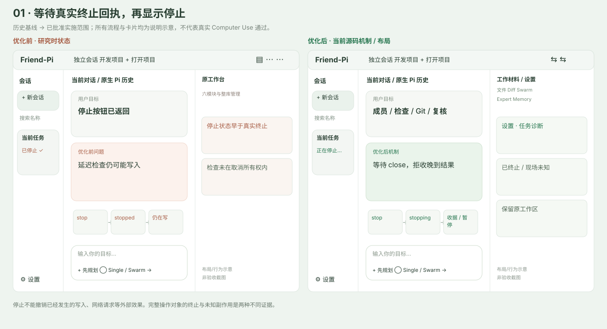
边界。停止不能撤销已经发生的写入、网络请求等外部效果。完整操作对象的终止与未知副作用是两种不同证据。
验证。本次 Swarm/Expert 62/62 的针对性测试包含真实本地延迟检查及子进程、复核、隔离 Git 取消、晚到结果、跨进程冷恢复；最终 macOS 点击停止的证据由根 Agent 单列。
源码：packages/swarm/src/managed.ts:6 · packages/swarm/src/index.ts:98 · apps/desktop/src/renderer/panels.tsx:67
测试：packages/swarm/test/evolution.test.ts · tests/sdk-worker.test.ts
原始历史缺失时保留身份和索引
当前源码 · 待同候选验收优化前。已登记的 Pi JSONL 缺失时传入 undefined，可能建立新历史并重写原会话索引。旧文件是否被删除并未得到证明。
- 区分新建空会话和恢复会话。恢复前校验路径、JSONL 头部/条目链、原生会话及项目身份，失败不建替代历史。
- 会话菜单“重新定位原始历史”连接宿主 session.relocate，选择原 JSONL 后由 SDK 校验完整条目链、原 Pi 身份及项目目录；恢复失败仍保留旧索引。新建会话是另一身份。
- 生产新建空会话写入真实 Pi 头部和自定义条目链，冷重启可继续读取，不伪造聊天消息。
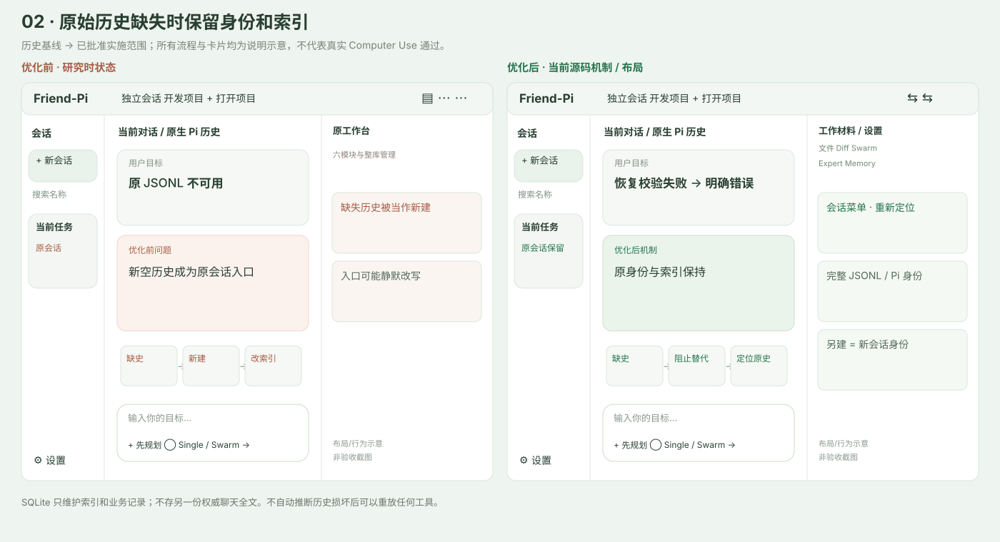
边界。SQLite 只维护索引和业务记录；不存另一份权威聊天全文。不自动推断历史损坏后可以重放任何工具。
验证。desktop-lifecycle 的缺史保护/空会话冷恢复测试和 sdk-worker 的空会话原生恢复测试对应这些路径。全量结果与真实重定位旅程查看根验收记录。
源码：apps/desktop/src/main.ts:95 · apps/desktop/src/sdk-worker.ts:99 · apps/desktop/src/renderer/App.tsx:239
测试：tests/desktop-lifecycle.test.ts · tests/sdk-worker.test.ts
原生消息完整投影与可读工具过程
当前源码 · 待同候选验收优化前。本轮流式工具过程已有，但冷恢复 DTO 只保留 role/text/id，图片、thinking、工具名/参数/结果关联丢失。Markdown 直接显示语法。
- 当前与冷恢复都从 Pi 原生条目投影图片、思考块、toolCallId、参数、结果和错误；不另存聊天权威。
- 安全 Markdown 展示表格、列表、链接、代码。工具过程可折叠，输入和输出按同一个 toolCallId 关联。
- 原始用户输入边界绑定条目和 hash，附加的文件材料不会混进轮次原文预览。
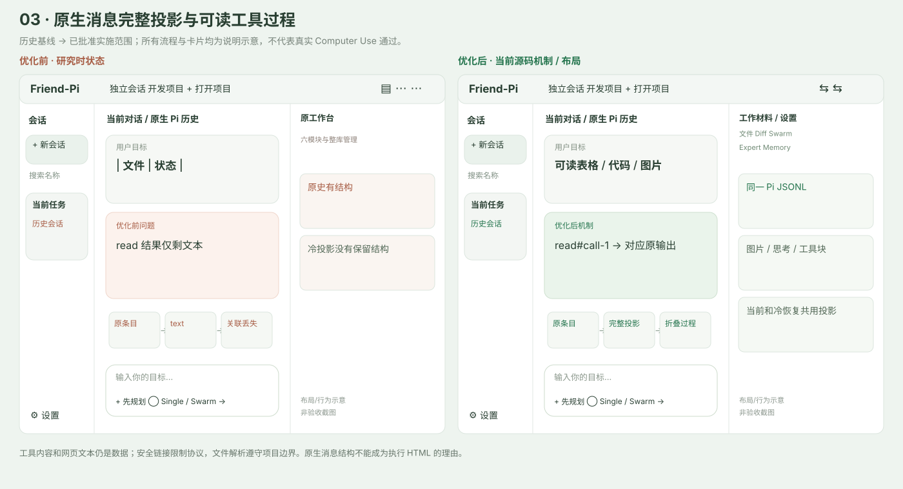
边界。工具内容和网页文本仍是数据；安全链接限制协议，文件解析遵守项目边界。原生消息结构不能成为执行 HTML 的理由。
验证。evolution-runtime 冷投影测试覆盖图片/思考/工具身份与用户原文边界；同源 renderer 的实际宽窄界面阅读由根 Computer Use 验证。
源码：apps/desktop/src/message-projection.ts:4 · apps/desktop/src/renderer/ui.tsx:36 · apps/desktop/src/sdk-worker.ts:32
测试：tests/evolution-runtime.test.ts · tests/sdk-worker.test.ts
四种范围的完整 Git 变更与双栏 Diff
当前源码 · 待同候选验收优化前。只读 git diff HEAD 漏掉未跟踪的新文件；文件可预览时 Diff 仍显示没有改动。
- 只读 Git status 的 NUL 分隔清单涵盖已跟踪、未跟踪、删除、重命名及文件模式；二进制/大文件明确标记。未跟踪文件显示新增内容，不自动 git add。
- 只实现已批准的工作区、未暂存、已暂存、本轮期间四种范围；按文件折叠，行内/双栏、行号和增删色展示。
- 本轮保存启动基线，缺基线或 HEAD 变化明确不可用。期间净变化包括同期外部编辑，不能宣称全由 Agent 产生。
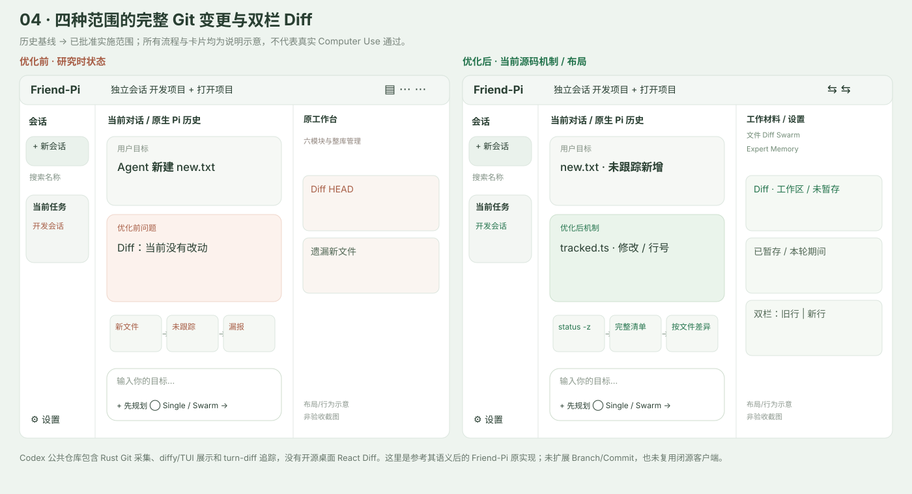
边界。Codex 公共仓库包含 Rust Git 采集、diffy/TUI 展示和 turn-diff 追踪，没有开源桌面 React Diff。这里是参考其语义后的 Friend-Pi 原实现；未扩展 Branch/Commit，也未复用闭源客户端。
验证。evolution-runtime Git fixture 覆盖中文/空格/换行文件名、空新增、二进制、已暂存及本轮范围，并验证 Git index 没改变。重命名、模式与完整实际 Diff 旅程以根 QA 为准。
源码：apps/desktop/src/workspace-files.ts:28 · apps/desktop/src/renderer/Workbench.tsx:18 · docs/sources.json:11
纠正一个事实，保留同条消息的其他约束
当前源码 · 待同候选验收优化前。蓝色改为绿色后，两条仍并列有效；同 entry 的数据库与 UTF-8 共用来源，改数据库会连带丢掉 UTF-8。第一项为原真实 GUI 观察，第二项为原组合 fixture。
- SourceRef 可携带片段起止、hash、factId；原 entry 仍可回查。精确撤回被纠正片段，保留同消息其他事实。
- 普通明确纠正在召回/安全边界前更新有效约束；不能可靠消歧时隔离相关事实，不能同时宣称旧值都有效。
- Memory 失效 epoch 跨进程持久化，派生草稿/现场采用前重查；原生默认与显式无限上下文分别处理，不强制展示 Context 页。
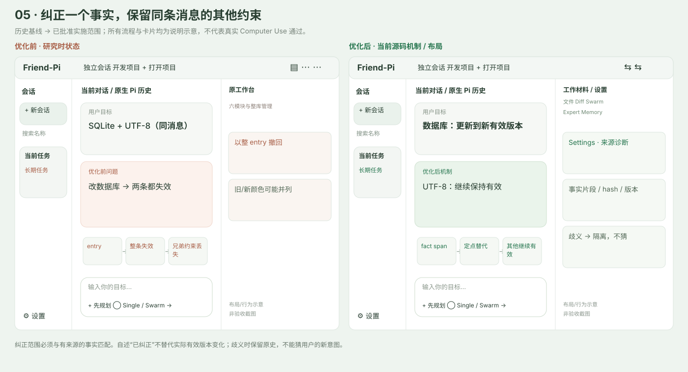
边界。纠正范围必须与有来源的事实匹配。自述“已纠正”不替代实际有效版本变化；歧义时保留原史，不能猜用户的新意图。
验证。Memory automation 与 Topic rebuild 测试覆盖同源 sibling 保留、明确纠正、歧义隔离、冷启动及跨进程失效；根单列连续对话的真实操作证据。
源码：packages/core/src/index.ts:113 · packages/memory/src/index.ts:434 · packages/topic-rebuild/src/index.ts:213
测试：packages/memory/test/automation.test.ts · packages/topic-rebuild/test/rebuild.test.ts
遗忘谱系抑制与自动学习的有效边界
当前源码 · 待同候选验收优化前。fork 换会话身份后旧事实可再成为候选，并未证明 active 已复活；“请帮我记住”误拒绝，候选存在重复/冲突。
- 遗忘按来源片段/事实身份跨 fork 与冷启动抑制，处理派生并保留原史；同条其他事实不被连带忘记。
- 按用户最新选择，项目事实、经客观结果支持的经验，以及有用户原话/独立证据支持的稳定偏好可自动生效，不要求每条手动 accept。
- 单次要求不泛化为个人偏好；来源不实、歧义和与有效事实冲突保留内部候选。附件不能冒充用户偏好，秘密不进入学习/召回。方法候选仍走 Expert 原有验证门槛。
边界。这是对旧“所有候选逐条手动采用/个人偏好只明确记住”的已批准调整，不等于任何模型生成文本都自动可信。自动 active 也必须有来源和生效范围。
验证。Memory automation 对遗忘 fork、冷启动、late reflection、来源伪造、附件偏好、secret redaction 与自动发布提供针对性覆盖；语义提取效果不由 fake provider 通过数推断。
源码：packages/memory/src/index.ts:246 · packages/memory/src/index.ts:375 · packages/memory/src/index.ts:581
测试：packages/memory/test/automation.test.ts · packages/memory/test/memory.test.ts
单驻留学习进程，后台串行且可与前台并行
当前源码 · 待同候选验收优化前。旧学习实例随会话各自调度；前台 B 只通知 B，A 的后台仍运行。旧规划曾建议全局前台抢占，这已被用户后续并行策略替代。
- 一个独立驻留 Node 学习宿主统一领取持久队列，后台模型调用串行，跨控制器租约与恢复阶段避免重复领取/重跑完成阶段。
- 前台会话可与背景同时执行，不再用旧“前台启动必取消背景”作通过标准。背景失败有有界重试与等待配置状态，模型可单独配置。
- 关闭窗口隐藏而继续学习；真正退出应用取消等待中的调用、等进程终止并保存分析阶段。重启从保留阶段接续，不自动重放未知工具副作用。
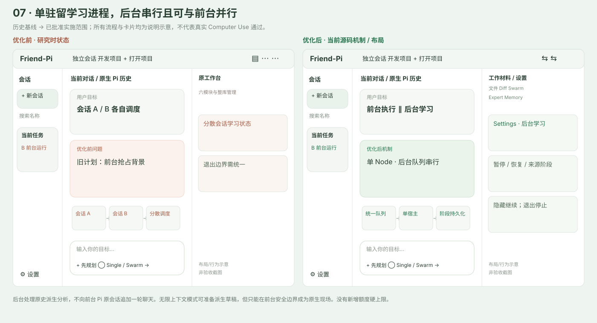
边界。后台处理原史派生分析，不向前台 Pi 原会话追加一轮聊天。无限上下文模式可准备派生草稿，但只能在前台安全边界成为原生现场。没有新增额度硬上限。
验证。learning-host 以真实本地 Node + fake HTTP 覆盖串行、前后台重叠、暂停/恢复、崩溃阶段恢复、删除 fencing 和退出停止。真实隐藏/退出的 macOS 行为由根 GUI 记录。
源码：apps/desktop/src/learning-worker.ts:10 · apps/desktop/src/main.ts:246 · packages/memory/src/index.ts:9
测试：tests/learning-host.test.ts · packages/memory/test/automation.test.ts
自动与明确采用专家使用同一权限规则
当前源码 · 待同候选验收优化前。auto use 的只读专家未及时约束 bash，明确指定却会拦截；GUI 无当前真实采用版本，Swarm 成员未记录实际 frozen adoption。
- 采用时立即相交有效工具范围；自动/明确路径一致，多专家不会扩大本轮权限。ID/version/hash、Skill 与方法冻结，目录可用不等于实际采用。
- Swarm 为整图冻结目录，成员实际采用向父控制器请求同版本，立即缩小自身 scope，并写自己的 Pi 原生收据。无效明确专家报错，缺可选插件的基本角色与错误区分。
- 工作台 Expert 只展示本轮真实采用专家；选择、编辑、版本差异、启停、回滚在设置。原生收据保存失败不能声称已采用成功。
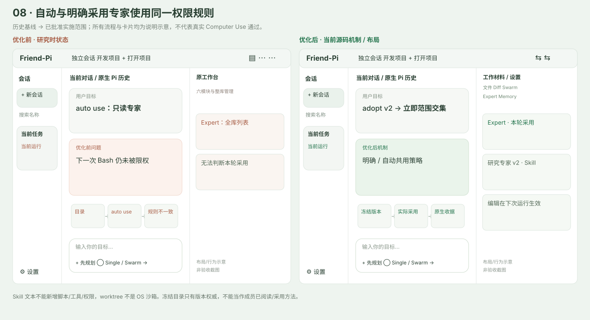
边界。Skill 文本不能新增脚本/工具/权限，worktree 不是 OS 沙箱。冻结目录只有版本权威，不能当作成员已阅读/采用方法。
验证。本次 62/62 包含 Expert 自动立即限权/交集/日志失败、public Pi 成员真实 auto use 后 Bash 被拒且文件没写；新编辑不改历史版本。真实模型效果另验。
源码：packages/expert/src/index.ts:44 · packages/swarm/src/member.ts:21 · apps/desktop/src/renderer/Workbench.tsx:21
测试：packages/expert/test/adoption-scope.test.ts · packages/swarm/test/member.test.ts
复核指向任务，返工只重跑依赖闭包
当前源码 · 待同候选验收优化前。独立复核只拒绝任务 A 时 A/B 全图重跑；原成果、成员尝试与隔离已有，但返工方法调整缺少可达入口。
- 结构化 review 提供 taskIds/resultVersions；只返工被拒任务及其下游依赖，复用独立已完成成果。无法归因暂停，不猜全图重试。
- 原 Task.prompt/originalPrompt 不被改写；新的 requirementVersion、尝试和复核原史保留。自动返工最多两轮，再失败需要调整方法。
- 工作台显示 DAG 与状态；设置任务详情在 paused 边界提供定向返工、原因/新要求，未知现场需要明确确认。SDK 将 rework 纳入真正运行 authority。
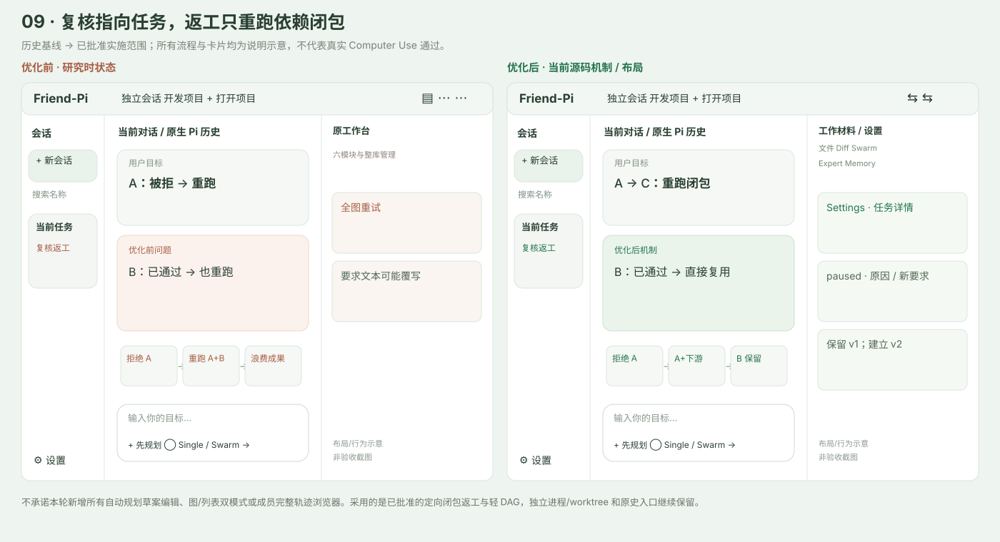
边界。不承诺本轮新增所有自动规划草案编辑、图/列表双模式或成员完整轨迹浏览器。采用的是已批准的定向闭包返工与轻 DAG，独立进程/worktree 和原史入口继续保留。
验证。本次 62/62 覆盖 A→C 返工而 B 不重跑、requirements v1→v2、无归因暂停、两轮停止线及 review 原会话保留。设置 Modal 已有代码可达，最终点击闭环看根验收。
源码：packages/swarm/src/index.ts:35 · apps/desktop/src/renderer/panels.tsx:73 · apps/desktop/src/sdk-worker.ts:30
测试：packages/swarm/test/evolution.test.ts · packages/swarm/test/swarm.test.ts
提交后通知，冲突从有来源的三方版本合并
当前源码 · 待同候选验收优化前。CAS 已防覆盖；问题一是 shared.changed 早于 commit，另一连接读不到通知版本。问题二是双写冲突仅让人刷新草稿，缺自主合并。两者不是同一故障。
- 最外层 commit 成功后再通知，事件携带 graph/document/revision/digest；回滚不发已提交通知，订阅者故障不能回滚已经持久化的材料。
- 成员和 GUI 带实际读取的 baseRevision/baseDigest。非重叠修改确定性三方合并；重叠时有限调用模型，必须引用三方 digest，合并后再 CAS；思考时不占锁。
- 缺来源、关键约束/接口互斥、无法可靠合并、取消或连续 CAS 竞争时保存三方冲突并暂停，等待成员终止。工作台保持轻 DAG，编辑及诊断在设置。
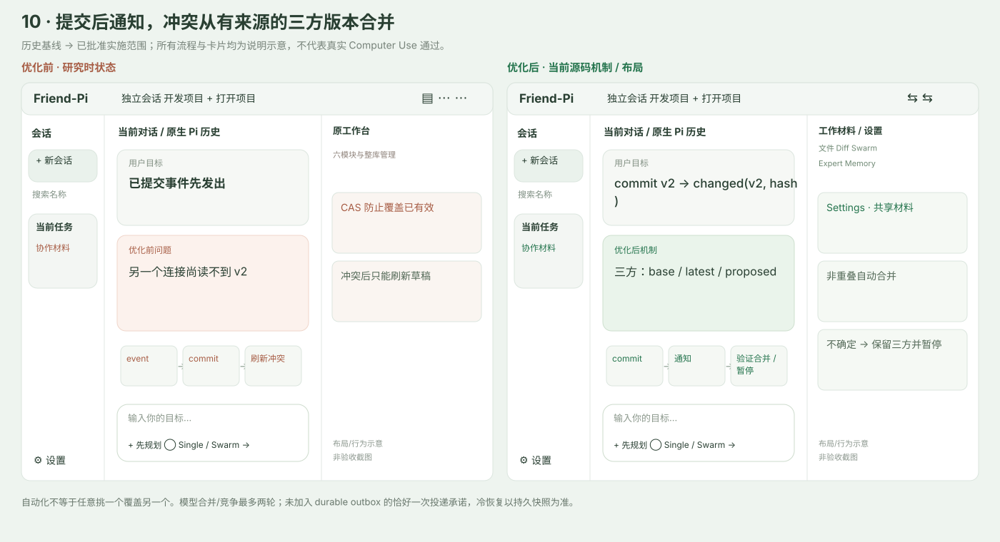
边界。自动化不等于任意挑一个覆盖另一个。模型合并/竞争最多两轮；未加入 durable outbox 的恰好一次投递承诺，冷恢复以持久快照为准。
验证。本次 62/62 对双 SQLite 可见性、COMMIT 故障、通知故障、非重叠、增删空文档、来源约束、重叠模型、两次 CAS 竞争和活动图暂停均有针对性验证。GUI 已携带 digest，根另验点击保存。
源码：packages/swarm/src/shared.ts:55 · packages/core/src/index.ts:81 · apps/desktop/src/renderer/panels.tsx:72
测试：packages/swarm/test/evolution.test.ts · tests/evolution-runtime.test.ts
只读探索形成版本计划，用户批准后执行
当前源码 · 待同候选验收优化前。计划模式已有工具边界禁写，但缺 ls/find/grep 原生探索，回答的“计划”没有独立版本审批与采用身份。
- 使用 Pi 原生 read/ls/find/grep 与受限 friend_plan；Plan 禁写、禁 Bash 和 Swarm 执行，在嵌套工具边界同样生效。
- 模型必须实际 submit 版本化计划，审批绑定 id/revision/hash 与当时模型/思考等级/Single或Swarm 配置。旧版本、重复批准或配置改变拒绝。
- 中央简短审批卡提供打开全文、开始、修改、退出；全文作为文件材料打开。批准才产生执行 run，不把模型口头“已提交”当计划。
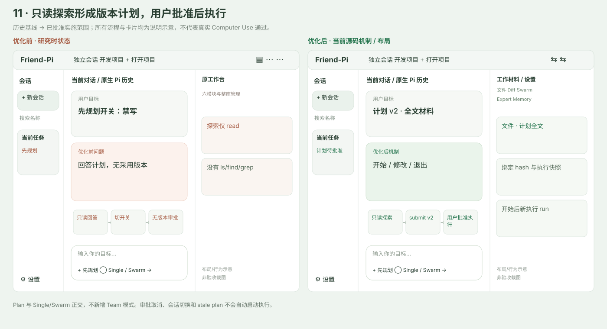
边界。Plan 与 Single/Swarm 正交，不新增 Team 模式。审批取消、会话切换和 stale plan 不会自动启动执行。
验证。PlanStore 的版本/配置冻结测试与 sdk-worker 的原生 submit、模型自述不可替代、Plan 越界 write 拒绝对应此流程；根完成真实客户端批准旅程。
源码：apps/desktop/src/plan-store.ts:9 · apps/desktop/src/sdk-worker.ts:59 · apps/desktop/src/renderer/App.tsx:213
测试：tests/evolution-runtime.test.ts · tests/sdk-worker.test.ts
会话归档、恢复与有边界的删除
当前源码 · 待同候选验收优化前。横向项目栏、左会话状态、新建、重命名和名称搜索已有；缺可恢复归档及明确删除流程，不应把已有布局写成缺失。
- 近期/归档切换；归档会话只读，恢复后可继续。忙碌及正在停止会话不能归档或进入删除确认。
- 删除先展示明确范围与 token，实际执行清理 Friend-Pi 拥有的主/成员/复核原史和独占业务记录，写 tombstone 阻止晚到学习复活。中断清理可显式幂等接续。
- 项目代码、原附件、Git worktree/成果和外部重新定位的原史保留；单独存在其他有效来源的记忆可继续，失去唯一来源的停止自动采用。
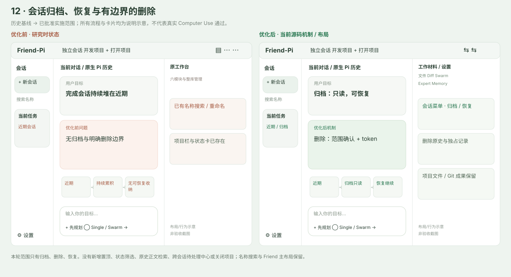
边界。本轮范围只有归档、删除、恢复。没有新增置顶、状态筛选、原史正文检索、跨会话待处理中心或关闭项目；名称搜索与 Friend 主布局保留。
验证。desktop-lifecycle 覆盖 archive late state、只读/忙碌拒绝、删除闭包/晚到 fencing、cleanup 幂等接续；根须单列真实删除确认和冷重启。
源码：apps/desktop/src/main.ts:38 · apps/desktop/src/main.ts:139 · apps/desktop/src/renderer/App.tsx:240
测试：tests/desktop-lifecycle.test.ts · packages/memory/test/automation.test.ts
轮次浮卡只预览用户原文
当前源码 · 待同候选验收优化前。Codex 风格侧轨、定位、收藏和键盘操作已有；浮卡把用户问题与助手摘要一起展示，不够聚焦。
- 浮卡只展示该轮真正的用户原始输入，不混入助手摘要，也不混入附加文件内容。保留空白和换行。
- 继续使用现有侧轨点击定位、书签及 ArrowUp/Down、Home/End、B、Escape、ArrowRight 焦点操作。
- 收藏和布局位置保存在各自会话本地展示状态，不更改 Pi 原始聊天内容。
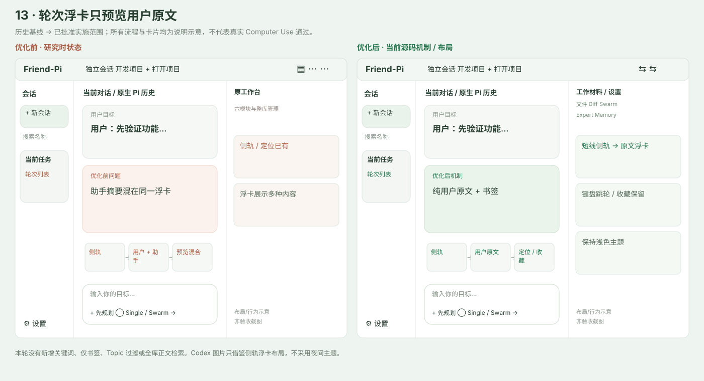
边界。本轮没有新增关键词、仅书签、Topic 过滤或全库正文检索。Codex 图片只借鉴侧轨浮卡布局，不采用夜间主题。
验证。evolution-runtime 对用户输入 textEnd/hash 边界保真；定位、书签与键盘已有代码。最新纯用户浮卡的真实阅读效果由根 Computer Use 单列。
源码：apps/desktop/src/renderer/TurnIndex.tsx:69 · apps/desktop/src/message-projection.ts:4 · apps/desktop/src/renderer/App.tsx:5
两个镜像开合按钮与原有可拖分栏
当前源码 · 待同候选验收优化前。左右拖动、键盘调宽、比例冷恢复和窄屏隐藏已有；右上多模块入口增加布局理解成本。
- 右上保留两个镜像按钮，分别控制左会话栏和右统一工作台，按钮状态与实际开合一致。
- 继续使用现有分隔条拖动、键盘调宽、宽度恢复和窄屏抽屉；不把这些已有能力重新算作本轮从零完成。
- 工作台内部五页保持轻量；输入区的计划与协作控制保留 Friend 位置，窗口变窄时保持关键操作可达。
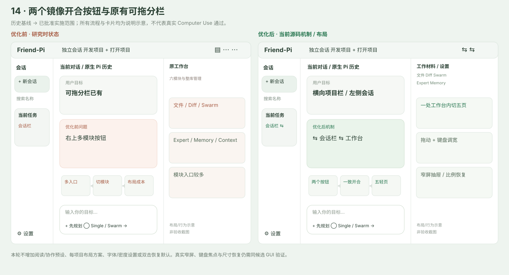
边界。本轮不增加阅读/协作预设、每项目布局方案、字体/密度设置或双击恢复默认。真实窄屏、键盘焦点与尺寸恢复仍需同候选 GUI 验证。
验证。ResizeHandle/App/CSS 的既有路径保留，本轮镜像按钮和五页布局已接入。具体拖动前后像素和键盘状态只引用根验收实际截图，示意图不是结果。
源码：apps/desktop/src/renderer/ResizeHandle.tsx:11 · apps/desktop/src/renderer/App.tsx:189 · apps/desktop/src/renderer/layout.css:108
文件树、可关闭预览标签与安全分段阅读
当前源码 · 待同候选验收优化前。已有文本/图片附件和相对路径文本预览，没有文件树、多材料标签或可达的图片预览；历史图片结构问题属于 03。
- 文件页提供名称过滤的项目文件树，打开文本、Markdown、图片及来源/计划虚拟材料；最多六个预览标签，单标签可关闭。
- 文本 UTF-8 分段，代码行号/定位与下一段；Markdown 安全渲染，允许的图片按大小限制。二进制/不支持类型明确说明并可系统打开。
- realpath 项目边界拒绝符号链接逃逸；材料可添加到输入框。文件预览与 Diff 共用项目边界，原附件不因会话删除而移除。
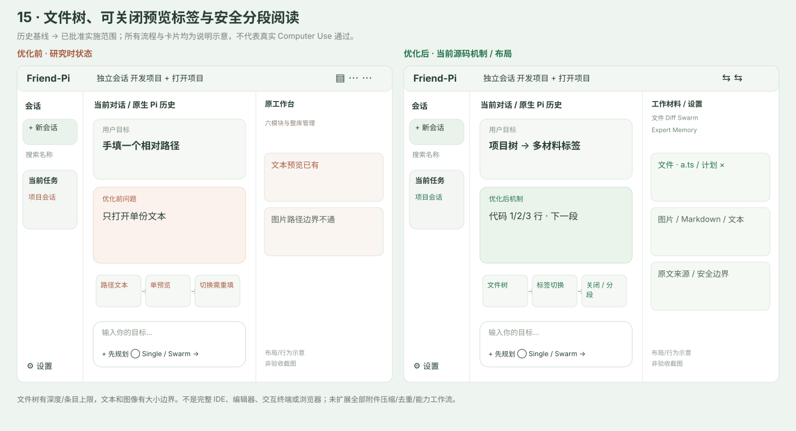
边界。文件树有深度/条目上限，文本和图像有大小边界。不是完整 IDE、编辑器、交互终端或浏览器；未扩展全部附件压缩/去重/能力工作流。
验证。evolution-runtime 覆盖 UTF-8 分页、长行/行定位、图片与 symlink 逃逸；工作台树/切标签/关闭标签/系统打开的真实操作由根记录。
源码：apps/desktop/src/workspace-files.ts:19 · apps/desktop/src/renderer/Workbench.tsx:15 · apps/desktop/src/renderer/Workbench.tsx:15
设置集中配置、作用域与独立模型测试
当前源码 · 待同候选验收优化前。有模型服务与部分默认项，但默认 Swarm 可与关闭 Swarm 插件矛盾；自定义模型能力固定为 text/non-reasoning，长期管理分散在工作台。
- 设置可搜索字段，区分全局/项目默认；模型、思考等级、模式、插件依赖与 native/infinite 组合在保存时校验，矛盾不静默降级。
- 自定义兼容服务可配置协议、reasoning、图像能力和上下文窗口；保存认证、实际 model.test 与真实任务派发是三种独立结果。Key 字段保存后清空。
- 全部插件启停和专家/记忆/验证/学习长期管理集中设置。当前执行冻结快照与下一安全边界配置分开；忙碌时排队，空闲 reload 并重新绑定。
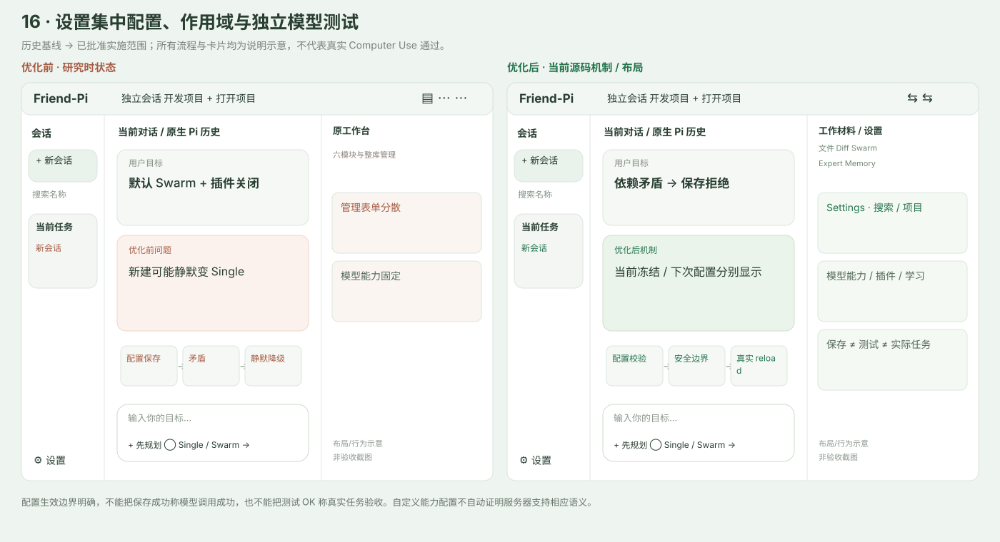
边界。配置生效边界明确，不能把保存成功称模型调用成功，也不能把测试 OK 称真实任务验收。自定义能力配置不自动证明服务器支持相应语义。
验证。Main 的 model.test 在 allowlist 后显式注册并由 public runtime.complete 调用；原生 reload 与只启 Expert/禁 Memory 路径有 SDK 测试。作用域/UI/真实服务连通性由根单列。
源码：apps/desktop/src/main.ts:39 · apps/desktop/src/provider-settings.ts:11 · apps/desktop/src/renderer/App.tsx:29
默认原生 Pi 上下文，按需开启无限上下文
当前源码 · 待同候选验收优化前。工作台展示现场/预算/原史长卡；旧研究提议后台连续现场，容易被误解为所有会话默认使用自定义重建。
- 默认 native：Pi 公开 loop、JSONL、压缩维护原生上下文。旧 enabled:true 不自动迁为 infinite，只有用户显式选择才启用自定义现场。
- infinite 模式在安全边界以 operationId、来源覆盖/版本与持久 Memory epoch 验证采用；后台只做派生草稿，成功进入 Pi 原生条目后才推进覆盖水位。
- 工作台不再提供 Context 页面。记忆/消息来源、原文/前后文作为文件材料回查；手动整理、回退与高级现场诊断放设置。失败保留有效现场并回退 Pi，取消不额外重放工具。
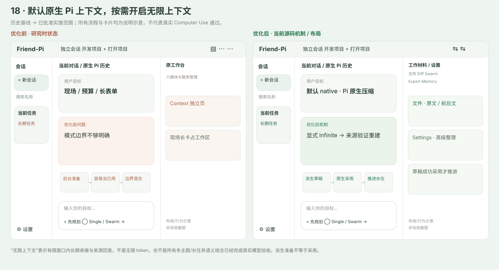
边界。“无限上下文”表示有限窗口内长期承接与来源回查，不是无限 token，也不是所有多主题/长任务语义组合已经完成真实模型验收。派生准备不等于采用。
验证。Topic 的 native 默认、原生公开组合、草稿/水位、相同摘要不同 operation、新输入 tail、取消与跨进程失效都有测试。完整真实长任务连续性待根分层验收。
源码：packages/topic-rebuild/src/index.ts:99 · packages/topic-rebuild/src/index.ts:418 · apps/desktop/src/main.ts:23
测试：packages/topic-rebuild/test/rebuild.test.ts · packages/topic-rebuild/test/native-combination.test.ts · packages/swarm/test/native-lifecycle.test.ts
单一工作台五轻页，显示本轮真实记录
当前源码 · 待同候选验收优化前。六模块共用侧面板但含整库/管理表单；Memory 无 per-run 注入收据，Expert 有原生采用记录却未被 GUI 消费，不能用库列表代替本轮采用。
- 右上一个工作台开合按钮（另一个为会话栏），内含文件 / Diff / Swarm / Expert / Memory 五页，不提供 Context。全部启停、全库编辑和长任务诊断去设置。
- Swarm 显示当前 run 的 DAG；Expert 显示真实 adopted 的冻结专家；Memory 按实际 injected-to-context/request-prepared/response-observed/tool-read 原生收据显示版本与来源。
- 旧轮无收据显示“尚无记录”，已观察空结果显示“未提供”。目录、检索命中、准备草稿和模型自称不算实际采用；Memory 收据也不推断模型决策的因果依赖。
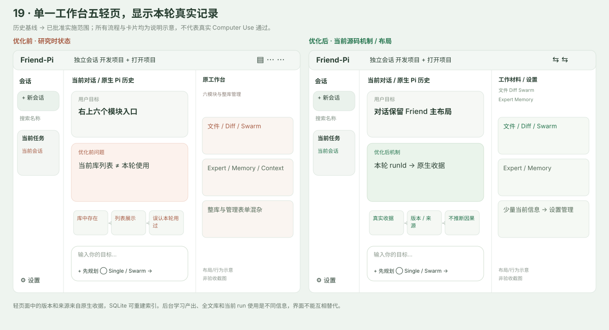
边界。轻页面中的版本和来源来自原生收据，SQLite 可重建索引。后台学习产出、全文库和当前 run 使用是不同信息，界面不能互相替代。
验证。Memory-alone public Pi fake 请求与冷恢复测试、Expert native adoption、SDK run receipt 恢复与 Workbench 对 runId 的过滤支撑数据链；最终五页操作体验另由根 CUA 验证。
源码：apps/desktop/src/renderer/Workbench.tsx:4 · packages/memory/src/index.ts:487 · apps/desktop/src/sdk-worker.ts:32
测试：packages/memory/test/native-usage.test.ts · packages/expert/test/native-adoption.test.ts · tests/sdk-worker.test.ts
既有专家验证与受限成长继续保留
既有 2 个独立正例 + 1 个范围外反例 + 必要客观检查的发布门槛、版本冻结、撤回/回滚、仅文本方法成长继续保留。管理入口移至设置；本轮不新增代码/研究/整合模板，也不宣称完整验证套件编辑增强已经完成。既有专家成长测试不等于本轮重新跑了真实模型自动发布全旅程。
既有源码与测试保留，管理统一迁至设置。不是本轮新增的产品能力。
来源与结果边界
Friend-Pi 业务为新实现，Pi 为固定且未修改的运行时；其他项目是参考，不是另一个执行底座。没有复制闭源桌面 React Diff。
| 来源 | 固定 commit | 许可 | 实际模式 |
|---|---|---|---|
| Pi | eb326d265ae0b88489a6d10319307780df827cdf | MIT | runtime-dependency |
| Codex | afb436df8b70bb5bc57b86d9a3e829968988cd21 | Apache-2.0 | reference |
| MiMo-Code | 6babeb0b98f9b4818bddf04a4331edfee04dbf85 | MIT | reference |
| DeepSeekHarness | 5badb15009ae1756c3afe0ae0cef1faafc290ccc | MIT | reference |
| MiniMax Code | 56221c121c6e63d0e50b68f57d4abf083afed119 | MIT | reference |
固定来源账本 · Memory 来源与证据边界 · Topic 来源与证据边界
最终候选的 commit、Pi SHA、制品摘要、绝对路径、真实模型与 Computer Use 结果由根 Agent 写入当前 .artifacts/qa 验收记录。本文没有用旧包哈希或示意图替代这些证据。